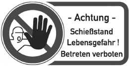
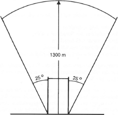
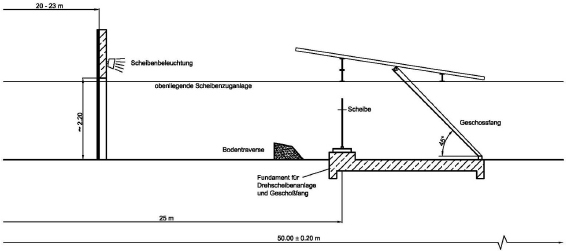
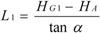
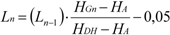
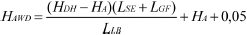
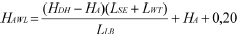
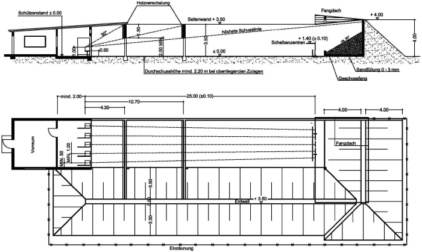
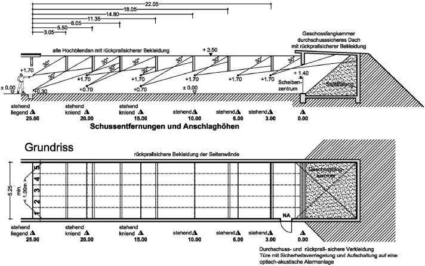

4.1 Allgemeines
4.1.1 Schützenstand
Bei der Planung, Errichtung und dem Betrieb eines offenen Schießstandes für das Schießen mit Einzelgeschossen sind die nachstehenden Vorschriften zu beachten, sofern nicht in den Schießstandrichtlinien für bestimmte Nutzungsarten (z. B. DL-Waffen [Nummer 3], Biathlon, Field-Target- oder Silhouetten-Schießen [Nummer 6]) besondere Bestimmungen gegeben sind.
Auf die allgemeinen Vorschriften nach Nummer 2 wird verwiesen.
Ggf. können Maßnahmen zum baulichen Schallschutz notwendig sein. Hierbei kann es sich beispielsweise um folgende Lösungen handeln:
4.1.2 Umzäunung und Warnzeichen
Um das Betreten einer Schießstätte durch Unbefugte zu verhindern, ist die Anlage ≥ 2,00 m hoch einzuzäunen. Der Zaun ist vorzugsweise aus ≥ 1,50 m hohem Maschendraht mit drei darüber angebrachten Stacheldrähten auszuführen.
Sofern als Seitensicherung von Schießbahnen Erdwälle verwendet werden, ist die Einzäunung außerhalb der Wälle und nicht auf ihren Kronen zu errichten, damit ein Besteigen der Wälle von außen unterbunden wird. Bei Schießständen, deren Schießbahnsohle tiefer als das umgebende Geländeniveau liegt, ist die Umzäunung soweit zurückzusetzen, dass ein Einblick von außen in die Schießbahn (entgegen der Schussrichtung) nicht möglich ist.
Auf die Gefährdung innerhalb des eingefriedeten Gebietes von Schießstätten ist durch sichtbare Warntafeln, die in genügenden Abständen voneinander an oder in der Umzäunung anzubringen sind, hinzuweisen.
Die Warntafeln sollen eine ausreichende Größe haben und können als Kombinationsschild mit Zeichen P006 nach DIN 4844 ausgeführt werden. Die zusätzliche Beschriftung hat folgenden Wortlaut aufzuweisen:
Achtung – Schießstand – Lebensgefahr!
Betreten verboten

4.1.3 Schießbahn
Die Sohle einer Schießbahn muss bei offenen Anlagen aus Erde oder Sand (Körnung ≤ 3 mm) der Dicke 10 cm bestehen. Sie muss frei von Steinen oder anderen Fremdkörpern sein und eben und annähernd horizontal verlaufen. Ist ein Gefälle der Schießbahnsohle nicht zu vermeiden, so soll die Abweichung von der Horizontalen ± 4 % ( 4 m auf 100 m) nicht übersteigen.
In einer Schießbahn und auf der Innenseite von Seitenwällen oder Geschossfangwällen gewachsenes Strauchwerk oder in die Bahn ragende Äste sind zu beseitigen. Die Schießbahn ist von Gegenständen, die nicht dem Betrieb des Schießstandes dienen bzw. hierfür erforderlich sind, freizuhalten. Um Windeinflüsse für den Schützen aufzuzeigen, können Windfahnen aufgestellt werden.
Bei Schießständen in stillgelegten Steinbrüchen kann von der Forderung nach einer steinfreien Schießbahnsohle abgewichen werden, wenn der Steinbruch in schwach besiedeltem Gelände (Nummer 4.5) liegt und die Abschlusswand ausreichend hoch ist, um von der Schießbahnsohle absetzende Geschosse sicher aufzufangen. Dies ist jeweils von einem SSV zu beurteilen.
Schießbahnsohlen in offenen Anlagen, die höher als der Fußboden im Schützenstand liegen, sind wegen der erhöhten Abprallergefahr zu vermeiden.
In neu zu errichtenden offenen Schießständen, bei denen Schusswaffen verwendet werden, deren Geschosse eine E0 > 200 J besitzen, sind nur oben laufende Scheibenzuganlagen zur Vermeidung von Absetzern zulässig. Zusätzlich ist die Schießbahn für Reinigungsarbeiten bzw. zum Ausmähen leichter zugänglich.
4.1.4 Bodentraversen
Bodentraversen aus Sand oder Erdreich, deren zum Schützen zeigende Vorderseiten nicht senkrecht ausgebildet sind und deren horizontale Flächen direkt beschossen werden können, sind nicht zulässig.
Betonschwellen sind wie Hochblenden rückprallsicher zu bekleiden (siehe Nummer 2.5.3). Es ist erforderlich, die den Schützen zugewandte Vorderkante mit hochfesten Stahlplatten (siehe Nummer 2.7.2) zu bekleiden.
Metallkonstruktionsteile von Duellanlagen und laufenden Scheiben dürfen auch durch Holzstapel gegen direkte Treffer gesichert werden.
4.2 Sicherheitsbauten
4.2.1 Abschirmung des Gefahrenbereiches
Bei offenen und teilgedeckten Schießständen bewirken abgestimmte Sicherheitsbauten die notwendige Absicherung des Gefahrenbereiches. Der Gefahrenbereich weist den Teil des Hintergeländes und den seitlichen Bereich eines Schießstandes aus, in dem bei ansonsten unzureichender baulicher Absicherung oder vorschriftswidriger Durchführung des Schießens eine Gefährdung durch Querschläger oder Freiflieger eintreten kann.
Der Gefahrenbereich wird, soweit bei einzelnen Schießarten nicht besondere Regelungen vorgesehen sind, von 25° seitlich der jeweils äußeren Geschossbahnen und der maximalen Gesamtschussweite der auf dem Schießstand zugelassenen Geschosse bestimmt.

Abbildung 4.2.1 Beispiel für den Gefahrenbereich der Geschosse von Randfeuerpatronen im Kaliber .22 l.r.
Die maßgebliche Höhensicherung bzw. der Absicherungswinkel ergibt sich annäherungsweise aus dem Abgangswinkel für die maximale Flugweite der Geschosse. Weiterhin wird davon ausgegangen, dass bei einem zulässigen Schießbetrieb unter Anweisung von verantwortlichen Aufsichtspersonen nur bestimmte Abweichungen von der Hauptschussrichtung zur Höhe und den Seiten hin auftreten können, bzw. von den Aufsichten nicht erkannt werden können.
| Geschoss/Patrone | Kaliber | Höchstflugweite [m] |
| Langwaffen | ||
| Geschosse für DL-Waffen | 4,5 mm (Diabolo) | 250 |
| Randfeuer | .22 l.r. | 1 300 |
| .22 Magnum | 1 800 | |
| Zentralfeuer | z. B. .222 Rem., 5,6x50 Mag. | 2 500 – 3 000 |
| z. B. 6,5x68, .308 Win., 8x68 S | 4 500 – 5 000 | |
| Flintenlaufgeschoss | z. B. 12/70 | 1 500 |
| Kurzwaffen | ||
| Randfeuer | z. B. .22 kurz | 800 |
| Zentralfeuer | z. B. 6,35 Browning | 800 |
| z. B. 7,65 Browning, 9 mm kurz | 1 300 – 1 500 | |
| z. B. 9 mm Luger, .357 Magnum | 2 000 | |
Tabelle 4.2.1 Höchstflugweiten von Geschossen
Nach den in der Praxis gewonnenen Erkenntnissen ist bei Schießständen für
in Schussrichtung nach oben abzusichern.
Eine abweichende Regelung ergibt sich für das jagdliche Schießen auf die Scheibe "Flüchtiger Überläufer" bzw. die "Laufende Scheibe", bei der die Waffenmündung in der Erwartungs-/Fertighaltung (DJV-Schießvorschrift Anhang 1 Abbildung 5, Sportordnung DSB, Teil 4) nach oben gerichtet ist. Hier ist auch über den 30°-Bereich hinaus eine schützenpositions- und nutzungsbezogene Höhensicherung von der Feuerlinie bis zur ersten Hochblende auszuführen.
Die notwendige Absicherung eines Schießstandes muss sich im Einzelfall maßgeblich auch nach der Beschaffenheit, Besiedlung und Nutzung des Gefahrenbereiches richten.
4.2.2 Abschirmung der Sicherheitsbauten
Die gefährdeten Bereiche müssen durch entsprechende Sicherheitseinrichtungen, das heißt Hochblenden, Seitensicherung und Abschluss der Schießbahn durchschusshemmend bzw. -sicher abgeschirmt werden. Die Abschirmung erfolgt durch abgestimmte Sicherheitsbauten.
Folgende Antragshöhen sind für die Abstimmung der Sicherheitsbauten maßgeblich:
Die Höhen von Hochblenden und Seitensicherungen einer Schießbahn, die Zahl und Anordnung der Hochblenden und der Abschluss einer Schießbahn sind aufeinander abzustimmen. Dabei ist derart zu verfahren, dass durch diese Sicherungen, gesehen von der jeweiligen Antragshöhe, die gefährdeten Winkelbereiche von der Waagerechten bis 20° bzw. 30° nach oben abgeschirmt sind. Die Abschirmung hat innerhalb der gefährdeten Höhenbereiche in der Hauptschussrichtung und im Winkel von 25° zur Schussrichtung jeweils seitlich der äußeren Schützenpositionen nach der ersten Hochblende jeden Einblick in die Umgebung von Schießständen auszuschließen.
Zu beachten sind die Angaben unter Nummer 4.2.1 zur Position der 1. Hochblende.
Die bauliche Absicherung des Schießstandes muss sich weiterhin nach der Beschaffenheit, Besiedlung und Nutzung des Gefahrenbereiches richten. So können z. B. höhere Gebäude und ansteigendes Gelände im Hintergelände eines Schießstandes (Schussrichtung) eine Höhensicherung auch über die in Nummer 4.2.1 genannten Bereiche hinaus erforderlich machen.
4.2.3 Hochblenden
Hochblenden sind quer über der Schießbahn eingebaute, senkrecht zur Schussrichtung angeordnete durchschusssichere bzw. -hemmende Bauteile, die die Höhensicherung bei offenen Schießständen gewährleisten.
Insbesondere in Verbindung mit teilgedeckten Schießständen sind auch sog. "liegende" Hochblenden zulässig, die zur Schussrichtung horizontal angeordnet sind.
4.2.3.1 Anschlagshöhen
Die üblichen Anschlagshöhen liegen zwischen 0,30 m (Liegendschießen), 0,70 m (kniender Anschlag) und 1,40 m bei stehendem Anschlag (maximal 1,70 m).
Bei Schießständen, bei denen ein Mehrdistanzschießen innerhalb der Schießbahn zulässig ist, werden die Sicherheitsbauten, abweichend von Nummer 4.2.2, auf die jeweilige zulässige Anschlagshöhe abgestimmt.
4.2.3.2 Anordnung der Hochblenden
In welchen Entfernungen von der Brüstung des Schützenstandes die erforderlichen Hochblenden errichtet werden müssen, ist u. a. von der Aufsatzhöhe der ersten Hochblende und deren Anordnung abhängig.
Es kann zweckmäßig sein, in der Planung der Anordnung der Hochblenden ihre Verwendung als Träger von Geschossfängen und Fangdächern auf Zwischenentfernung vorzusehen.
4.2.3.3 Bauarten
Die Hochblenden über einer Schießbahn sind über deren ganze Breite in der erforderlichen Höhe freitragend oder auf Pfosten oder Pfeilern zu errichten. Sie müssen seitlich bis an die Seitensicherungen heranreichen, das heißt bis in die Seitenwälle hinein oder bis an die Seitenmauern geführt werden.
Direkt an die Brüstung des Schützenstandes oder den Schützenpositionen anschließende Schallschleusen sind keine Sicherheitsbauteile, wenn sie nicht durchschusssicher ausgeführt sind.
4.2.3.4 Baustoffe
Die Hochblenden von Schießständen sind entsprechend der auf dem Stand geplanten oder zugelassenen Geschosse und -energien nach den Bestimmungen für Baustoffe (Nummer 2.7.2) auszuführen.
4.2.3.5 Bekleidung von Hochblenden und deren Trägern
Zur Vermeidung rückprallender Geschosse sind die Hochblenden schützenseitig zu bekleiden (Nummer 2.5.3).
4.2.4 Seitensicherung
Unter Seitensicherung versteht man Sicherheitsbauten, die die Sicherheit eines Schießstandes in Schussrichtung gesehen zu den Seiten hin gewährleisten.
4.2.4.1 Seitenblenden
Die Seitensicherung eines Schießstandes durch Seitenblenden ist bei Neuanlagen nicht gestattet. Sofern aus Platzmangel oder sonstigen Gründen ein durchgehender Seitenwall nicht errichtet werden kann, ist eine durchgehende Seitenmauer vorzusehen. Es kann auch eine Kombination von Mauer und Seitenwall erfolgen.
Vorhandene Seitenblenden bei bestehenden Schießständen müssen eine ausreichende Seitensicherung (Nummer 4.2.1) gewährleisten. Ein Zutritt zur Schießbahn von außen her oder von dem Weg zu einer Anzeigerdeckung ist durch einen Zaun zuverlässig abzusperren.
Bei den noch vorhandenen Seitenblenden ist darauf zu achten, dass ihre schützenseitigen Flächen so angeordnet sind, dass ein von der Standmitte abgegebener Schuss sie in einem Winkel von ca. 90° trifft. Stehen Seitenblenden in einem zu spitzen Winkel zur Schussrichtung, besteht die Gefahr, dass Geschosse von den Blenden absetzen und auf der gegenüberliegenden Seite zwischen den dort stehenden Blenden den Schießstand verlassen.
4.2.4.2 Seitenmauern
Innerhalb von dicht besiedelten oder verkehrsreichen Gegenden ist eine durchgehende Seitensicherung von Schießbahnen, ungeachtet der 25°-Sicherung nach 4.2.1, mit Hilfe von Seitenwällen oder Seitenmauern unerlässlich. Derartige Seitenwälle oder Steinmauern sind unmittelbar an den Schützenstand und an den Geschossfang bzw. an den Abschluss einer Schießbahn anzuschließen.
Seitenmauern einer Schießbahn sind nach der Baustofftabelle Nummer 2.7.2 zu errichten. Pfeiler von Seitenmauern sollen nach Möglichkeit innen bündig gesetzt werden. Sonst sind diese Pfeiler gemäß Nummer 2.5.3 mit Weichholz der Dicke ≥ 2,4 cm schützenseitig zu bekleiden. Die Seitenmauern selbst bedürfen keiner Bekleidung.
Die Höhen der Seitenmauern müssen den jeweiligen Höhen der Hochblenden entsprechen. Bei schräger Ausführung der Seitenmauern, ausgehend von der Durchschusshöhe der jeweils zum Schützen liegenden Hochblende zur Oberkante der folgenden Hochblende, ist ein Sicherheitszuschlag von mindestens 0,05 m der erforderlichen Höhe zuzurechnen.
4.2.4.3 Erdwälle
Als Seitensicherung einer Schießbahn errichtete bewachsene Erdwälle sollen je nach der Beschaffenheit des Erdreiches ein Steigungsverhältnis von höchstens 1:1 erhalten; dies entspricht einem Böschungswinkel von 45°. Die Kronen der Wälle sind flach in einer Breite von mindestens 0,50 m zu bauen.
Erdwälle müssen, bei Abstimmung der Sicherheitsbauten nach Nummer 4.2.2, mindestens die Höhe der Hochblenden besitzen und sich an diese unmittelbar anschließen. Wälle, die sich gesetzt haben, sind entsprechend zu erhöhen. Hierbei können neben Erdreich auch andere Materialien verwendet werden, sofern eine erneute Anschüttung von Erdmaterial nicht möglich ist (Abrutschgefahr).
4.2.5 Schießbahnabschluss
Die Schießbahn ist durchschusssicher abzuschließen. Der Abschluss wird nach den Bestimmungen für Baustoffe (Tabelle 2.7.3) gebaut oder besteht aufgrund der natürlichen Gegebenheiten.
Der Schießbahnabschluss muss sich über die gesamte Breite der Schießbahn erstrecken. Die Oberkante eines Abschlusswalles muss mindestens 0,20 m über der höchsten, durch einen direkten von der Antrags- oder Brüstungshöhe abgegebenen Schuss erreichbaren Linie liegen; bei Abschlusswänden mindestens 0,05 m.
4.2.5.1 Natürlicher Schießbahnabschluss
Natürliche Schießbahnabschlüsse sind z. B. steile Hänge von Bergen, Kiesgruben, Steinbrüchen, Abraumhalden oder dergleichen und Erdwälle.
Natürliche Schießbahnabschlüsse sind mit einer Füllung zu versehen, die eine Kontamination des umgebenden Erdreiches durch Geschossmaterial verhindert und eine einfache Entsorgung bzw. Trennung zulässt.
Als Füllmittel kommen z. B. Sand, Gummigranulat o. Ä. in Frage. Eine Kontamination des umgebenden Erdreiches kann durch eingelegte Folien oder eine Geschossfangkammer verhindert werden.
Bei Schießständen, die ausschließlich zum Schießen mit Randfeuerpatronen Kaliber .22 l.r. bestimmt sind, können vor natürlichen Schießbahnabschlüssen auch Geschossfangkästen verwendet werden. Diese müssen den Anforderungen an Geschossfangsysteme (Nummer 2.8) entsprechen.
4.2.5.2 Gebauter Schießbahnabschluss
Ein gebauter Schießbahnabschluss wird aus Mauerwerk oder Beton nach den Bestimmungen für Baustoffe (Nummer 2.7.3) errichtet. Eine Abschlusswand allein, gleichgültig aus welchem Baustoff und in welcher Dicke sie errichtet ist, darf nicht gleichzeitig als Geschossfang dienen. Vor Mauerwerk oder Beton ist stets ein geeignetes Füllmittel in ausreichender Dicke oder ein Geschossfangsystem (Nummer 2.8) vorzusehen.
4.2.5.3 Geschossfangeinrichtungen
Alle zum Auffangen von Geschossen vorgesehenen Bauteile von Schießständen müssen so beschaffen sein, dass die Aufnahme der auftreffenden Geschosse durch Energieaufzehrung zuverlässig und sicher erfolgt. Die Anforderungen an Geschossfangsysteme (Nummer 2.8) sind einzuhalten.
Füllungen von Schießbahnabschlüssen müssen mindestens 0,50 m über die Oberkante der höchsten Scheibe hinausreichen bzw. geeignet sein, einen direkten von der Antrags- oder Brüstungshöhe abgegebenen Schuss zuverlässig aufzunehmen.
Sonstige Geschossfangsysteme vor gebauten Schießbahnabschlüssen müssen auf die größten eingesetzten Scheiben abgestimmt sein.
4.2.5.4 Scheibenstand
Scheiben sollen höchstens 1,00 m vor der Vorderseite eines Geschossfanges bzw. des Beginns der Sohle einer aufgeschütteten Füllung aufgestellt werden.
Die Vorgaben nach Nummer 2.6 sind zu beachten.
4.2.5.5 Fangdach
Über einem Geschossfang oder einer Füllung muss ein Fangdach angebracht werden. Das Dach soll sich vom Abschluss der Schießbahn bis zur Vorderkante des Geschossfanges erstrecken. Es soll bis auf die Seitenwälle bzw. Seitenmauern reichen oder es ist eine, bis an das Dach reichende, seitliche Schutzwand anzubringen. Alle im Geschossfang möglicherweise entstehenden Abpraller bzw. Geschosssplitter müssen sicher gefangen werden.
Soweit Randfeuerpatronen bis Kaliber .22 l.r. verschossen werden, darf das Fangdach aus Holz der Dicke ≥ 2,4 cm mit einer wasserdichten Auflage bestehen.
Bei Schießständen, die für eine Nutzung für KW-Munition bis zu einer E0 von 1 500 J zugelassen sind, hat die Holzdicke ≥ 5 cm zu betragen oder das Fangdach ist aus einem gleichwertigen Baustoff herzustellen.
Bei Schießständen, die für eine Nutzung für Munition bis zu einer E0 von 7 000 J zugelassen sind, sind bei Neuanlagen geschlossene Geschossfangkammern mit Decken aus Stahlbeton vorzusehen.
Der für Altanlagen geforderte Aufbau von Fangdächern bleibt davon unberührt.
4.2.5.6 Wartung
Die Geschossfangeinrichtungen einschließlich ihrer ggf. vorhandenen Füllungen bedürfen einer ständigen Wartung (Nummer 10.3).
4.2.6 Anzeigerdeckungen
Aus einer Anzeigerdeckung werden die Scheiben zum Beschuss und zum Anzeigen der Schüsse ausgefahren sowie zum Abkleben eingeholt. Anzeigerdeckungen können sowohl unterhalb als auch seitlich oder oberhalb der Scheiben angelegt werden.
Seitlich der Schießbahn liegende Anzeigerdeckungen werden zweckmäßigerweise in vorhandene Erdwälle oder natürliche Bodenerhebungen gebaut.
4.2.6.1 Sicherheit
Der Scheibendurchlass muss jeweils so eng sein, dass keinesfalls eine Person durch ihn in die Schießbahn gelangen kann.
Sämtliche Anzeigerdeckungen müssen gegen die mögliche Beschussrichtung eine vollständige, durchschusssichere Deckung bieten und nach den Vorschriften über Baustoffe (Nummer 2.7.2) hergestellt sein. Die entgegen der Schussrichtung liegenden Beton- oder Mauerwände von Anzeigerdeckungen, die seitlich der Scheiben angeordnet sind, sollen nach Möglichkeit durch eine Erdanschüttung abgedeckt werden. Die Anschüttung muss in mittlerer Scheibenhöhe mindestens 0,50 m dick sein. Freie Wände der Deckungen sind ständig auf ihren einwandfreien Zustand zu überprüfen. Die lichte Höhe einer Anzeigerdeckung soll mindestens 2,00 m, die lichte Weite mindestens 1,50 m betragen.
Für die Verständigung zwischen Schützen, Aufsichtspersonen und Anzeigern ist eine Kommunikationseinrichtung vorzusehen.
4.2.6.2 Zugang
Der Zugang zu einer Anzeigerdeckung muss außerhalb der Schießbahn verlaufen. Ein- und ausgehende Personen dürfen nicht gefährdet werden können.
Bei bestehenden Anlagen, bei denen ein außerhalb der Schießbahn liegender, gesicherter Zugang zu einer Anzeigerdeckung nicht eingerichtet ist, müssen die Anzeiger vor dem Beginn eines jeden Schießens von der verantwortlichen Aufsichtsperson in der Deckung eingeschlossen und nach Beendigung des Schießens wieder abgeholt werden.
Ein Betreten einer Schießbahn direkt aus einer Anzeigerdeckung heraus und von deren Zuwegung muss während des Schießens ausgeschlossen sein. Die Bestimmung der Nummer 2.5.1 ist hierbei zu beachten.
4.2.6.3 Seh- und Durchlassschlitz
Die Höhen und Breiten der Durchlassöffnungen von Anzeigerdeckungen, die seitlich von Scheiben liegen, dürfen nur die Scheiben durchlassen. Damit wird ein Betreten der Schießbahn durch die Öffnungen ausgeschlossen.
Die Durchlassschlitze müssen durch eine äußere oder innere Blende derart geschützt werden, dass kein Geschoss einen solchen Schlitz treffen oder in den Schlitz abprallen kann. Eventuell vorzusehende Beobachtungsfenster müssen aus einer splitterfreien, durchschusshemmenden Verglasung in einer Dicke bestehen, die von Geschosssplittern nicht durchschlagen werden kann. Sie muss sicher gegen einen direkten Schuss in die Wand der Deckung eingebaut werden.
Nach jedem Ausfahren einer Scheibe bzw. nach jeder Schussanzeige hat der Anzeiger seinen Stand in der Deckung dieser Blende einzunehmen.
4.2.6.4 Sitzgelegenheiten
Bänke oder anderweitige Sitzgelegenheiten sowie Tische, die in einer Anzeigerdeckung verwendet werden, sind an deren Rückseite unterhalb der Bedachung so zu befestigen, dass Anzeiger diese nicht unterhalb der Scheiben aufstellen, besteigen und hierdurch in den Gefahrenbereich oberhalb eines Durchlassschlitzes gelangen können.
4.2.6.5 Warnflaggen
Für eine Unterbrechung des Schießens sind in der Deckung rote Signalflaggen vorzuhalten. Nach Zeigen der Warnflagge ist das Schießen sofort einzustellen.
4.3 Anordnung von Scheiben auf Zwischenentfernungen
4.3.1 Allgemeines
Grundsätzlich richtet sich die Anordnung von stehenden Scheiben im Sinne der Nummer 2.6 auf Zwischenentfernungen der Schießbahnlänge nach deren individuellen Gegebenheiten. Die innere und äußere Sicherheit eines Schießstandes z. B. durch rück- und abprallende Geschosse bzw. deren Teile darf nicht beeinträchtigt werden.
Bei der Planung und dem Bau von Neuanlagen sind die Hochblenden so zu positionieren und statisch entsprechend auszulegen, dass auf ihrer Rückseite in Schussrichtung gesehen vor Beschuss abgeschirmt technische Vorrichtungen vorgesehen werden können. Solche Vorrichtungen können einfahrbare bzw. absenkbare Geschossfangsysteme sein, Scheibenhalterungen oder aufliegende Fangdachkonstruktionen.
Bei Altanlagen sind die Gegebenheiten für den möglichen Einbau von stehenden Scheiben auf Zwischenentfernungen der Schießbahnlängen im Einzelfall vor Ort durch einen SSV zu beurteilen. Insbesondere muss bei der sicherheitstechnischen Beurteilung die Nutzung des Gefahrenbereiches bzw. die Umgebung eines Schießstandes (Besiedlung, gefährdete Objekte) mit einfließen.
Für den Einbau von oben liegenden Scheibenzuganlagen ist eine freie Durchschusshöhe unter den Hochblenden von mindestens 2,20 m, bezogen auf das Fußbodenniveau des Schützenstandes, zu wählen. Die Einbauempfehlungen der jeweiligen Hersteller sind hierbei zu berücksichtigen.
Die Schießbahnsohle sollte annähernd horizontal sein, sie darf in Schussrichtung nicht ansteigen. Günstig ist zur Vermeidung von Geschossaufsetzern ein nach dem Scheibenstand auf Zwischenentfernung zum Schießbahnabschluss hin fallendes Niveau der Schießbahnsohle. Das Zentrum der Scheiben am Schießbahnabschluss, wie das des Geschossfanges ist dann auf die Maßbezugshöhe (Fußbodenniveau im Schützenstand bzw. Standhöhe der Schützen) anzupassen.
Geschossfangeinrichtungen auf Zwischenentfernungen müssen so konstruiert und positioniert werden, dass auftreffende Geschosse sicher aufgenommen werden. Eine Kontamination des Bodens auf Zwischenentfernungen mit Geschossmaterial ist zu vermeiden. Werden elektronische Trefferanzeigesysteme verwendet, so ist über diesen als Witterungsschutz ein Fangdach ausreichender Abmessungen vorzusehen.
4.3.2 Scheibenentfernungen 10 m und 15 m
Grundsätzlich dürfen stehende Scheiben in längeren Schießbahnen auf den Zwischenentfernungen 10 m und 15 m für das Schießen mit DL-Waffen sowie Zimmerstutzen angeordnet werden, wenn unmittelbar hinter den Papierscheiben Geschossfangkästen angeordnet werden. Bei entsprechender Positionierung einer Hochblende sind auf deren Rückseite die Geschossfänge ein- und ausfahrbar zu installieren; ansonsten müssen deren Halterungen bzw. Ständer wegnehm- oder wegschwenkbar oder auf den Scheibenwagen montiert sein. Außerdem ist die Schießbahn in diesem Bereich mit Folien oder Planen zum Aufsammeln herunterfallender Geschossfragmente abzudecken. Grundsätzlich nicht zulässig sind niveaugleiche Abdeckungen der Schießbahnsohle mit Betonplatten oder deren harte Versiegelung (Nummer 4.4.2). Ansonsten müssen Betonplatten oder dgl. durch Absenken oder Vorsetzen einer Traverse gegen direkten Beschuss, bezogen auf die jeweilig zulässigen Anschlagshöhen, abgesichert werden.
Sollen in einer offenen 25-m-Schießbahn mit üblicher Höhensicherung, auf der mit KW bis zu einer E0 von 1 500 Joule geschossen werden darf, Scheiben auf Zwischenentfernungen der Schießbahnlänge (z. B. 5 m, 10 m und 15 m) vorgesehen werden, so dürfen nur durchdringbare Scheibenträger eingesetzt werden (kein Holz, dafür Pappe, Styrodur etc.). Die Scheiben können an Seilen (Hanf- oder Kunststoff-, keine Stahlseile) o. Ä. an Hochblenden oder hinter beschusssicher montierten quer verlaufenden Balken befestigt werden. Der Schießbahnabschluss muss über ein ausreichend dimensioniertes Fangdach verfügen (Nummer 4.2.5.5), Geschossfangkammern sind vorzuziehen. Die Scheiben sind mit ihrem Zentrum im Bezug auf die Anschlagshöhe (in der Regel stehender Anschlag) so zu positionieren, dass die damit vorgegebene Schussrichtung durch das Zentrum des jeweiligen Geschossfangsystems verläuft.
4.3.3 Scheibenentfernung 25 m
Diese Zwischenentfernung für das Schießen mit KW ist sicherheitstechnisch entweder für eine E0 von 200 J (Randfeuer patronen bis Kaliber .22 l.r.) oder bis zu 1 500 Joule abzustimmen. Die Art der Nutzung der Zwischendistanz-25-m wird wesentlich von der vorhandenen oder geplanten technischen Ausstattung der Schießbahn (wie Art der Scheibenzuganlage) und der Schießbahnlänge bestimmt. Auch die Bewertung der Umgebung des jeweiligen Schießstandes z. B. deren Einstufung als "schwach besiedelt" im Sinne der Nummer 4.5 muss in die Gesamtbeurteilung einfließen.
Bei einer Schießbahnlänge von mehr als 50 m und/oder unten liegenden Scheibenzuganlagen in Altanlagen ist bei Verwendung von KW-Munition bis zu einer E0 von 1 500 Joule unmittelbar hinter dem 25 m-Scheibenstand unter Nutzung der dort befindlichen Hochblende ein entsprechender Geschossfang vorzusehen. Dieser hat die gesamte freie Durchschusshöhe unter der Hochblende und seitlich mindestens 0,50 m über die Ränder der äußeren größten verwendeten Scheibe abzudecken.
Hierbei muss ein Stahlblech der Dicke ≥ 10 mm mit einer Zugfestigkeit ≥ 500 N/mm2 oder Material gleichwertiger Festigkeit eingesetzt werden, das unter einem Winkel von 45° oder kleiner nach hinten unten geneigt ist. Zulässig ist auch ein üblicher Stahllamellengeschossfang. Das jeweilige Geschossfangsystem muss, wenn auf der Schießbahn auf größere Entfernungen geschossen werden soll, nach oben, unten oder zur Seite so ausschwenk- oder verschiebbar sein, dass es nicht durch direkte Schüsse getroffen werden kann. Bei einer Neuanlage sollte möglichst auf ca. 20 m bis 23 m eine Hochblende vorgesehen werden, hinter der der Scheibenstand mit Geschossfangeinrichtung einzubauen ist. Auf der Rückseite der Hochblende lässt sich dann das notwendige Fangdach abgeschirmt gegen direkten Beschuss anbringen.

Abbildung 4.3.3 Nach unten ausschwenkbares Geschossfangsystem
Beim Schießen mit Randfeuerpatronen bis zu einer E0 von 200 J ist eine Anordnung von Scheiben auf eine Zwischenentfernung von 25 m in längeren Schießbahnen dann zulässig, wenn unmittelbar hinter den Scheiben ausschwenkbare Geschossfänge angebracht werden. Die Geschossfänge müssen in ein- und ausgeschwenkter Lage zuverlässig festgestellt werden können. Auf das Erfordernis von Fangdächern gemäß Nummer 4.6.6 wird hingewiesen.
In einer Schießbahn mit der Gesamtlänge von 50 m ohne Scheibenzüge bzw. mit oben liegender Scheibenzuganlage (keine Holz- und Metallkonstruktionen), darf grundsätzlich auf eine Distanz von 25 m auf ein spezielles Geschossfangsystem verzichtet werden. Voraussetzung ist jedoch, dass das Scheibenzentrum der Zwischenentfernung so gewählt wird, dass die im Scheibenbereich auftreffenden Geschosse die Schießbahnsohle hinter dem Scheibenstand-25-m nicht tangieren und sicher von dem Geschossfangsystem im Abschluss der Schießbahn aufgenommen werden. Beim Schießen im knienden oder liegenden Anschlag müssen dann ggf. Pritschen verwendet werden, um die Anschlagshöhen anzupassen. Der Geschossfang am Schießbahnabschluss selbst muss von der Schießbahnsohle beginnend über die freie Durchschusshöhe unter den Hochblenden hinaus und über die Schießbahnbreite reichen. Ein Fangdach mit definiertem Schießbahnabschluss ist hier immer erforderlich.
4.3.4 Scheibenentfernung 30 m
Die Scheibenentfernung 30 m für das Schießen mit der Matcharmbrust darf in jeder längeren Schießbahn ermöglicht werden. Auf dem Scheibentransportwagen ist dafür eine mindestens 40 cm x 40 cm große und 2,5 cm dicke Weichholztafel mit einem auswechselbaren Weichbleizentrum von 9 cm Durchmesser anzubringen.
Die Höhe des Scheibenzentrums (Tabelle 2.6.1) muss dann in Abhängigkeit von der technisch möglichen Transporthöhe der vorhandenen Scheibenzuganlage bestimmt werden.
4.3.5 Scheibenentfernung 50 m
Auf eine Scheibenentfernung von 50 m ist das Schießen mit Waffen für Randfeuerpatronen bis zu einer E0 von 200 J in einer Schießbahn der Länge 100 m für diese Waffen nur zulässig, wenn unmittelbar hinter den Scheiben ausschwenkbare (oder nach oben hinter dort befindlichen Hochblenden verschiebbare) Geschossfangkästen angebracht sind. Auf die Erfordernisse eines Fangdaches gemäß Nummer 4.2.5.5 wird hingewiesen.
Ein Schießen mit VL-Langwaffen bis zu einer E0 von 3 000 J auf eine Zwischenentfernung von 50 m in längeren Schießbahnen ist nur dann erlaubt, wenn unmittelbar hinter den Scheiben ein entsprechendes Geschossfangsystem vorgesehen wird. Dieses muss über die ganze Höhe der freien Durchschussöffnung unter den Hochblenden und mindestens 50 cm über die seitlichen Ränder der äußeren, größten verwendeten Scheiben hinausragen. Als entsprechendes Geschossfangsystem darf ein Stahlblech der Dicke ≥ 10 mm mit einer Zugfestigkeit von ≥ 500 N/mm2 (nur Bleigeschosse) verwendet werden, das unter einem Winkel von ≤ 45° zur Schussrichtung nach hinten unten geneigt ist. Für die auftreffenden und nach unten abgeleiteten Projektile muss konstruktiv eine zum Erdreich hin versiegelte Aufsammelvorrichtung vorgesehen werden. Auf die Erfordernisse von Fangdächern wird hingewiesen.
Schießstände mit entsprechend großer Durchschusshöhe unter den Blenden (≥ 2,20 m), mit oben liegenden Scheibenzuganlagen und bei Verwendung von durchdringbaren Scheibenträgern, in denen die Geschosse allenfalls sicherheitstechnisch unbedeutend abgelenkt werden, darf u. U. auf ein Geschossfangsystem auf der Zwischenentfernung-50-m verzichtet werden. Hierbei ist durch die abgestimmten Höhen der Scheibenzentren-50-m zu gewährleisten, dass im Scheibenbereich auftreffende Projektile von dem Geschossfangsystem am Schießbahnabschluss aufgenommen werden. Die Schießbahnsohle darf zumindest nach dem Scheibenstand auf der Zwischenentfernung bis zum Schießbahnabschluss hin nicht ansteigen. Das Geschossfangsystem muss sich über die gesamte Höhe und Breite des von direkten Schüssen erreichbaren Bereiches des Schießbahnabschlusses erstrecken und immer ein ausreichendes Fangdach aufweisen.
4.3.6 Einbau "Laufender" Scheiben
In einer Schießbahn von mehr als 50 m Länge ist der Einbau einer "Laufenden" Scheibe für das Büchsenschießen auf 50 m Entfernung zulässig, sofern die zu den "Laufenden" Scheiben gehörende Schießbahn gegenüber der gesamten Bahn versenkt liegt und unmittelbar hinter den "Laufenden" Scheiben ein besonderer Geschossfang errichtet ist, dessen Oberkante mindestens 30 cm über der größten zur Verwendung kommenden Scheibe liegt.
4.4 Mehrdistanzschießen innerhalb der Schießbahn
4.4.1 Allgemeines
Beim Mehrdistanzschießen erfolgt eine Schussabgabe nicht nur vom festen bzw. stationären Schützenstand aus, sondern von verschiedenen Positionen innerhalb der Schießbahn. Es ist zwischen stationärem und bewegungsorientiertem Mehrdistanzschießen zu unterscheiden.
Beim stationären Mehrdistanzschießen werden auf Zwischenentfernungen der Schießbahnlänge unterschiedliche Schützenpositionen stationär genutzt, das heißt die Schützen gehen von Schützenposition zu Schützenposition in der Schießbahn vor (z. B. Schießen auf 25 m, 20 m, 15 m und 10 m) und schießen auf jeweils feste Scheibenentfernungen.
Beim dynamischen oder bewegungsorientierten Mehrdistanzschießen bewegt sich der Schütze ohne festgelegte Schützenpositionen in der Schießbahn und beschießt Scheiben auf unterschiedliche Scheibenentfernungen, u. U. unter Nutzung mobiler Geschossfänge (Nummer 2.8.5.8). Auch die Ausbildung in der Verteidigung mit Schusswaffen nach § 22 AWaffV (sog. Verteidigungsschießen) ist hier zu subsumieren.
Diese Schießart, bei der der Schütze in verschiedenen Anschlagsarten aus wechselnden Entfernungen innerhalb der Schießbahn die Scheiben beschießt, darf auf offenen Schießständen nur dann durchgeführt werden, wenn die Anlage so errichtet wurde, dass vom Schützenstand bzw. jeder Schützenposition aus (die Stellung der Scheibe vor dem Geschossfang darf nicht verändert werden), unter Berücksichtigung der jeweiligen Anschlagsart und -höhe, die nach Nummer 4.2.1 geforderte Sicherheit gegeben ist (Abbildung 4.4.1).
Das Mehrdistanzschießen darf nur dann durchgeführt werden, wenn entsprechende bauliche Einrichtungen vorhanden sind. Auf die notwendige behördliche Erlaubnis für diese Art der Nutzung wird hingewiesen. Vor der erstmaligen Nutzung durch Behörden ist der Schießstand zudem von einem Sachverständigen der entsprechenden Behörde zu prüfen.
4.4.2 Schützenstände/-positionen
Bei der Festlegung von Schützenständen und -positionen für das Mehrdistanzschießen sind die Bestimmungen für offene Schießstände sinngemäß anzuwenden. Die sich aus der Art des Schießens ergebenden sicherheitstechnischen Forderungen sind durch einen SSV zu bestimmen.
Die auf Zwischenentfernungen gewählten Schützenpositionen sind deutlich zu kennzeichnen.
4.4.3 Schießbahn
Bei einer Nutzung auf Zwischendistanzen in der Schießbahn ist für jede zulässige Schützenposition die notwendige Höhensicherung von 30° einzuhalten (Abbildung 4.4.1). Bei einer durchgehenden Absicherung der Schießbahn auf allen Zwischenentfernungen und für sämtliche Anschlagsarten erfolgt die Berechnung des Abstandes der Hochblenden in Relation zur Blendenhöhe wie folgt:
Beispiel: Eine Blendenhöhe von 1,20 m ergibt einen durchgängigen Blendenabstand von 2,03 m bzw. 2,00 m.
Dabei ist darauf abzustellen, dass die notwendige Seitensicherung mit der Höhensicherung abgestimmt ist.
Alle direkt beschießbaren Flächen von Hochblenden und deren Träger aus harten Baustoffen sind nach den Bestimmungen der Nummer 2.6.3 zu verschalen. Seitenmauern sind rückprallsicher zu bekleiden.
Gleiches gilt für die von direkten Schüssen, insbesondere bei kurzen Schussentfernungen, zu treffenden Wand- und Deckenflächen der Geschossfangkammer.
4.4.4 Geschossfangeinrichtungen
Geschossfänge bzw. Füllungen sind in einer Geschossfangkammer unterzubringen, die ein bis über die Scheibenstände reichendes durchschusssicheres Fangdach besitzt.
Bei harten Geschossfängen ist auf einen ausreichenden Rückprall- und Staubschutz zu achten.
4.5 Schießstände in schwach besiedelten Gebieten
In schwach besiedelten Gebieten und solchen, in denen das in Schussrichtung liegende Gelände nicht oder nur wenig begangen wird, dürfen nach Maßgabe der örtlich verschiedenen Verhältnisse Erleichterungen gewährt werden und zwar sowohl bei der Herstellung der Sicherheitsbauten als auch bei der Forderung anderer sicherheitstechnischer Bedingungen (z. B. Zäunung).
In jedem Einzelfall ist das Gutachten eines SSV erforderlich, in dem zweifelsfrei festgestellt und begründet sein muss, von welchen Vorschriften der Richtlinien abgewichen werden darf. Gleichzeitig sind darin die jeweiligen Auflagen und Bedingungen zu nennen, unter denen der Schießstand betrieben werden darf.
4.5.1 Definition der "schwach besiedelten Gebiete"
Ein Gelände ist als schwach besiedelt anzusehen, wenn es zum Beispiel
und der Gefahrenbereich
4.5.2 Sicherheitsbauten
Auf Sicherheitsbauten kann teilweise verzichtet werden, wenn der Gefahrenbereich (Nummer 4.2.1) entsprechend beurteilt wird. Änderungen in der Nutzung und Beschaffenheit der Gefahrenbereiche wie zunehmende Bebauung, Errichtung von Freizeiteinrichtungen und dgl. können zumindest objektbezogen höhere Absicherungen als bei der Planung vorgesehen bei solchen Schießständen nachträglich notwendig werden lassen. Ggf. sind im Rahmen der Überwachung durch die Genehmigungsbehörde und bei den sicherheitstechnischen Regelüberprüfungen durch den SSV diesbezügliche Feststellungen zu treffen.
4.6 Teilgedeckte Schießstände
Bei teilgedeckten Schießständen handelt es sich um solche, bei denen eine Teileinhausung der Schießbahn weiter als 5 m ab der Feuerlinie gebaut ist.
Für teilgedeckte Schießstände gelten grundsätzlich die Bestimmungen, die auch für offene Anlagen herangezogen werden. Zu beachten sind im Wesentlichen die Anforderungen an die im überdachten Teil des Schießstandes einzubauenden schallabsorbierenden Bekleidungen hinsichtlich ihrer Baustoffklasse (in der Regel mindestens schwerentflammbar nach Baustoffklasse B1 gemäß DIN 4102, Teil 1).
Die Schießbahnsohle ist so zu gestalten, dass bis zu einer Entfernung von mindestens 5 m ab der Feuerlinie unverbrannte TLP-Reste aufgenommen werden können.
4.6.1 Teilgedeckte Schießstände in nicht ganz bis zur Scheibe hin geschlossenen Räumen
Wenn die Einhausung der Schießbahn sehr weit hinausreicht, jedoch nicht ganz bis zum Scheibenstand verläuft, so muss diese so ausgeführt werden, dass ein unter 15° von den Umschließungsbauteilen absetzendes Projektil im Geschossfang gefangen wird. Dies gilt sowohl nach der Höhe als auch nach der Seite. Die demnach zulässige Entfernung des vorderen Endes der Einhausung vom Geschossfang ist unter Berücksichtigung der Größe der Austrittsöffnung und der Größe des Geschossfanges festzulegen.
4.7 Berechnung der Sicherheitsbauten
Für die Berechnung der Sicherheitsbauten gelten folgende Formelsymbole:
| Antragshöhe | HA |
| Höhe der Abschlusswand | HAWD |
| Höhe des Abschlusswalls | HAWL |
| tatsächliche Brüstungshöhe | HB |
| Durchschusshöhe | HDH |
| Gesamthöhe der n-ten Hochblende | HGn |
| Abstand der Abschlusswand vom Scheibenstand (abhängig von der Tiefe des gewählten Geschossfangsystems) | LGF |
| Standort der letzten Blende vor dem Scheibenstand | LLB |
| Entfernung der Hochblende | Ln |
| Entfernung des Scheibenstands | LSE |
| Abstand der Kronenmitte des Abschlusswalls vom Scheibenstand in Abhängigkeit des Erdschüttwinkels | LWT |
| Gefährdungswinkel | α |
Hochblenden
Für die Ermittlung der Anzahl, Standorte und Abmessungen der erforderlichen Hochblenden gelten folgende Festlegungen:
Es gelten folgende Sicherheitszuschläge:
Es gelten folgende Antragshöhen HA (Nummer 4.2.2):
| – | Für KW-Schießstände: | HA = 1,00 m | |
| – | Für LW-Schießstände ohne Brüstung: | ||
| 1. Blende: | HA = 1,00 m | ||
| ab 2. Blende: | HA = 0,30 m | ||
| – | Für LW-Schießstände mit Brüstung: | ||
| 1. Blende: | HA = 1,00 m | ||
| ab 2. Blende: | HA = HB | ||
Bei Brüstungshöhen HB > 1,00 m gilt HA = HB auch für die 1. Blende.
Zur Vereinfachung der Berechnungen sind folgende Annahmen zu treffen:
Für die Ermittlung des Standorts der 1. Hochblende gilt folgende Formel:

Für die Ermittlung der Standorte der weiteren Hochblenden gilt einheitlich folgende Formel:

Für die Ermittlung der Mindesthöhe der Abschlusswand gilt folgende Formel:

Für die Ermittlung der Mindesthöhe eines Abschlusswalls gilt folgende Formel:

4.8 Zeichnungen

Abbildung 4.8.1 25-m-Schießstand

Abbildung 4.8.2 Blenden für das Schießen auf Zwischenentfernungen